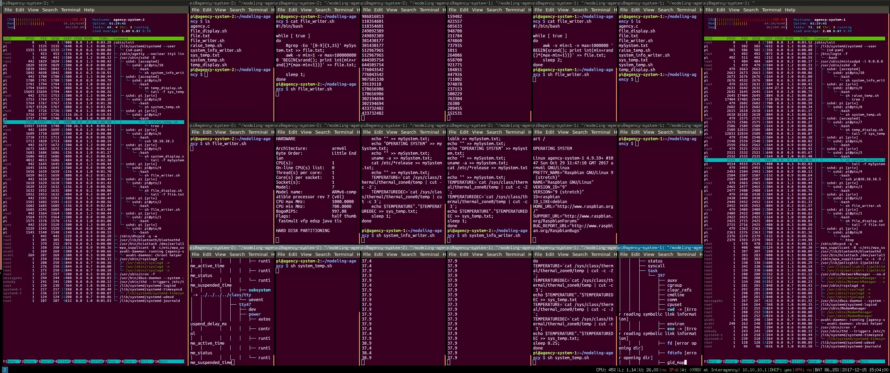

Interagency
Media: Linux Daemons, Wifi local area network, Raspberry Pi, i3wm Dimensions: 25cm x 15cm x 12cm Year: 2018 Artsits: Sam Ludford & Luke Demarest
This work examines the extent to which the notion of agency can be extended to nonhuman entities, and to computational entities in particular. Adopting a pragmatic orientation, we consider agency foremost as a discursive practice. We ask what it is that humans are doing when attributing agency to nonhumans, and whether such a practice can exist in the absence of human participants.
We answer this question in the affirmative, arguing that agency as a practice is sustainable when the nonhuman entities under consideration participate in networks containing conflicts of interest. We provide a research artefact demonstrating a speculative imagining of how networks of computational process may exhibit this structure.
We first consider how hidden agencies have historically functioned as explanations of natural phenomena, and the tension this reveals between nonhuman agency and the material-mechanistic worldview that has come into view with the advent of modern science. We note that insofar as this rationale undermines agency in nonhumans, it must do so in humans also, since it appeals to a deepening of our general understanding of the causal mechanisms underlying a world that humans partly constitute, and hinges on no details unique to nonhumans.
We argue that agency as a practice survives in the face of these developments, noting that it still thrives in certain scientific discourses. Among evolutionary theorists, recasting genes as the locus of Darwinian interests has proven instrumental in solving previously impenetrable mysteries. Similarly, the application of rational decision theory to nation states in the Cold War revealed that the pursuit of national agendas can lead to outcomes incongruent with the interests of the individual citizens belonging to them.
These considerations reveal what is at stake in the question of nonhuman agency. Software, we contend, provides rich territory for further investigation. Despite the continual diffusion of responsibilities to computational systems (for example for maintaining human or animal environments), it remains uncommon to consider these systems as capable of possessing interests irreducible to those of the humans who use or create them.
We consider how agency has functioned in the discourses surrounding software, both among computer scientists and in the wider culture. We identify the key behaviours taken to characterise software agents, and implement some of our own systems exploring these features. We focus on simple regulatory scripts exhibiting operational autonomy, a capacity to sense their environment, a capacity to act on their environment, and a future-oriented agenda structuring the relationship between senses and actions.
We note that even when these scripts are constructed in configurations of mutual regulation in which their agendas are entwined, ascriptions of agency remain dependent on our own desires to construct and understand them. We ask: what would it take for these scripts to cease merely to be agents for us, and become agents for each other? The answer, we submit, is the presence not just of interests, but of conflicts of interest. It is only when an environment contains multiple agents whose agendas run counter to each other that it becomes conducive to the interests of a particular agent to treat the entities it encounters as agents.
Taking this principle we implement a system where multiple scripts with multiple agendas run simultaneously, creating both conflicts of primary agenda and indirect environmental competition over CPU power, bandwidth, and other resources. We speculate that it is in such a system that we begin to glimpse the stirrings of a stronger notion of agency, one in which agency as a practice becomes self-supporting, untethered from human concern.
References:
- Karen Barad - Agential Realism
- Karen Barad - Posthuman Perfomativity : Toward an Understanding of How Matter comes to Matter
- Ulrik Ekman - Complex Ubiquity-Effects
- Stan Franklin and Art Graesser - Is it an Agent, or just a Program? A Taxonomy for Autonomous Agents
- Stan Franklin - Artificial Minds
- Robert Brandom - Articulating Reasons : An Introduction to Inferentialism
- Daniel Dennett - The Intentional Stance
- Carl Hewitt - Actors and Continuous Functionals
- Lucy Suchman - Figuring the Human in AI and Robotics